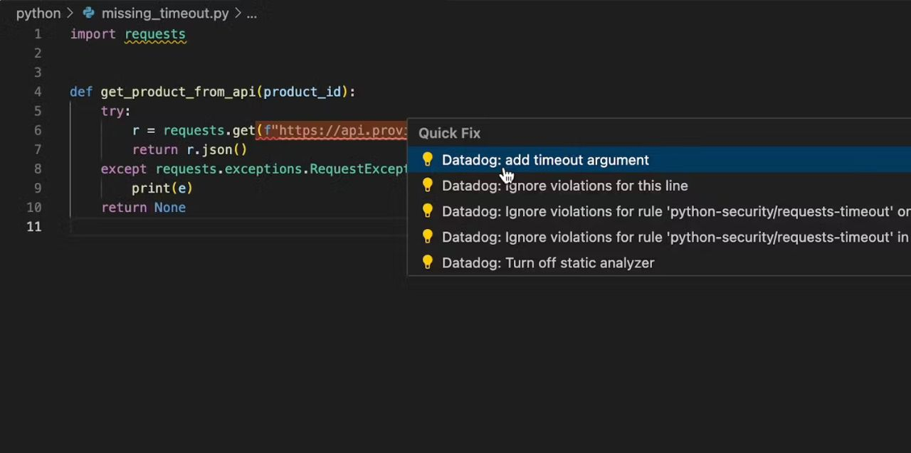

Started March 2025
A fast, modern audio-matching algorithm for instrumental pieces.
As a classically-trained violinist, I've consistently ran into the problem of hearing pieces in public or around Spotify, and not knowing what they are. I can usually remember a significant melody or key/tonality (search up relative pitch, this is fascinating!), but I can't remember the name of the piece. This is where scoreify comes in!
Scoreify is a command line application (hopefully soon to incorporate a GUI) that takes in a live audio recording or violin track being played by me, and attempts to identify a piece based on what I'm playing. It uses a combination of machine learning and music theory to identify the key, tonality, and tempo variance/range in order to create a running score of what's being played, and then compares that to a database of known pieces to identify the piece. The goal is to be able to take 15-20 seconds of violin playing, and narrow it down to potentially the violin 1 part of a famous orchestral piece, or a solo violin piece, which would be more trivial.
Shazam is a great reference for this project, and their original audio-matching algorithm thesis is something I hope to incorporate into the project to get a baseline matching algorithm going. Shazam utilizes a fast fourier-transform (FFT) to convert audio into a frequency domain, and then uses a hash table to match the frequency domain to a database of known songs. I hope to use a similar approach, but with a more music-theory based approach to narrow down the search space.
For now, the language of choice is Rust, but I'm looking to potentially change to C++ due to the low amounts of audio libraries in Rust. I'm also looking to incorporate a GUI, and potentially a web-based application to make it more accessible.
Learn more »Started on January 2025
Datadog's Code Security product utilizes a low-level development stack to effectively parse and analyze code for security vulnerabilities. The static analyzer is a key component of this product, and is responsible for parsing code, identifying vulnerabilities, and providing remediation advice to developers.
The static analyzer is written in Rust, and is designed to be fast, efficient, and scalable. It is also designed to be highly configurable, allowing users to customize the analysis process to suit their specific needs.
As an intern on this project, I am contributing to this project as part of my day-to-day responsibilities of being a software engineering intern at Datadog.
Learn more »